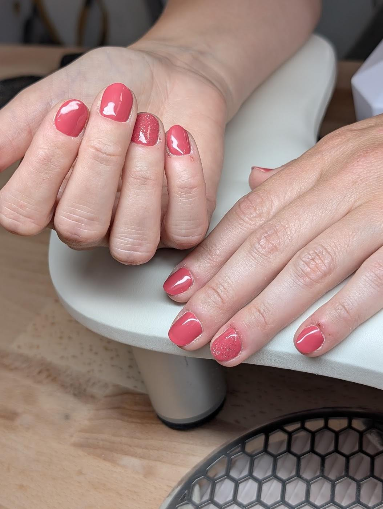
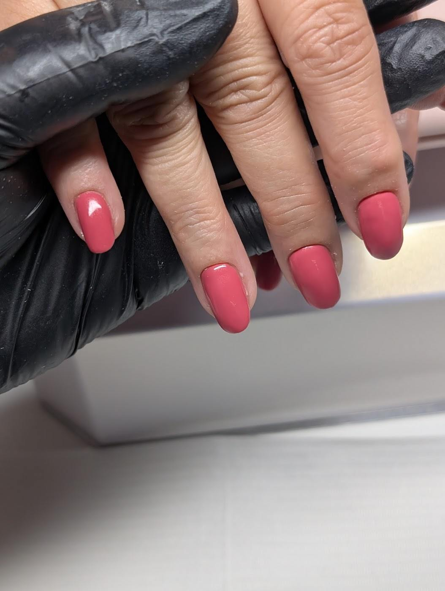
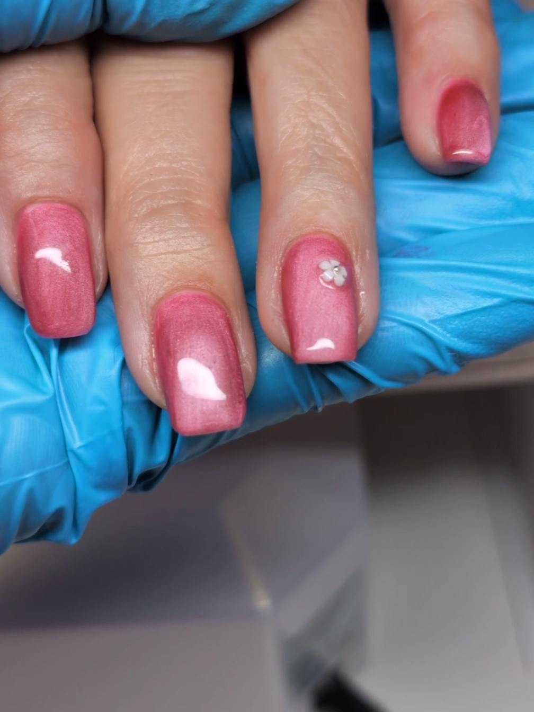
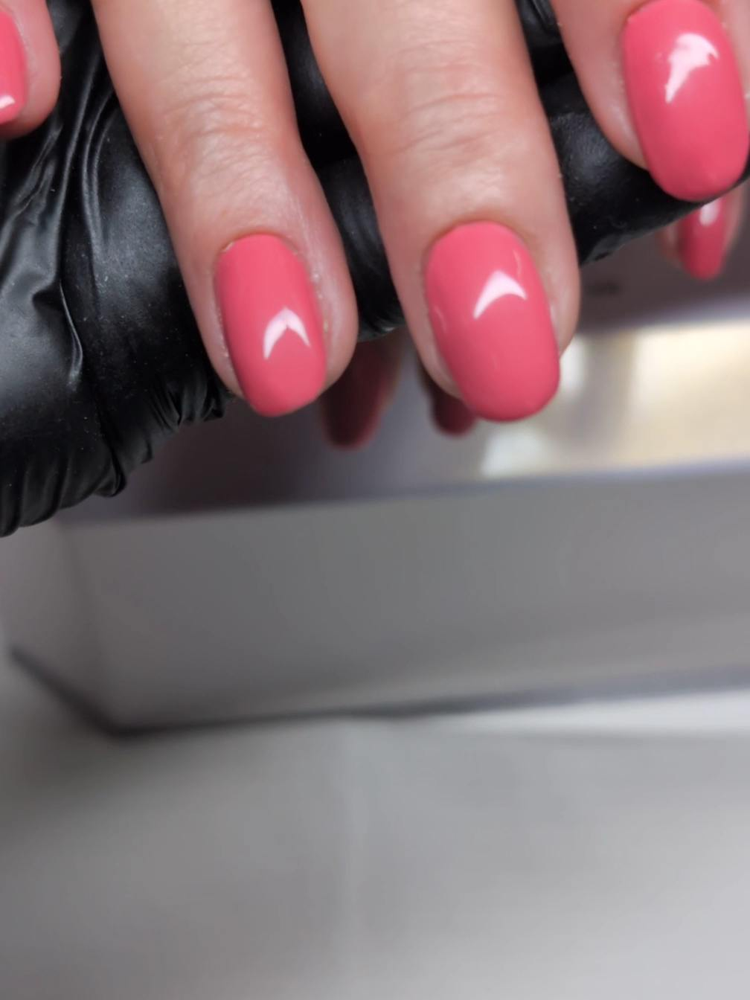

Nagels,na werktijd.
Nagelstudio aan de Nieuweweg in Doetinchem. Gespecialiseerd in BIAB, ook in de avonduren.
Nam echt de tijd.Uit een review op Google
Kies zelf een moment
De tijden wisselen per week, dus in de agenda hieronder ziet u precies wat er nog vrij is. U boekt rechtstreeks bij de studio.
Liever eerst even overleggen? Stuur een appje, dan denken we mee.
Wat is BIAB eigenlijk?
BIAB staat voor Builder In A Bottle. Het is een gel die als dun laagje op uw eigen nagel wordt aangebracht. Uw nagel wordt daardoor steviger, maar blijft van uzelf.
Het verschil met kunstnagels: er wordt niets opgeplakt en er hoeft weinig weggevijld te worden. Voor wie snel scheurende of buigende nagels heeft is dit vaak de rustigste oplossing.
Gemiddeld gaat een set drie tot vier weken mee. Daarna wordt de aangroei bijgewerkt in plaats van alles opnieuw te doen.
Werk van de afgelopen weken
Van rustige French tot cat eye. Alles wordt hier gezet, niets is een voorbeeldplaatje.




Zin in nieuwe nagels?
Kijk in de agenda wanneer het u schikt, of stuur een appje als u eerst wilt overleggen.
Wanneer kunt u terecht?
De openingstijden wisselen per week. In de agenda hierboven staat altijd wat er werkelijk vrij is, ook de avonden en de zaterdagochtend.